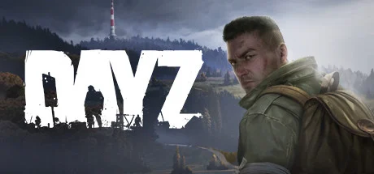
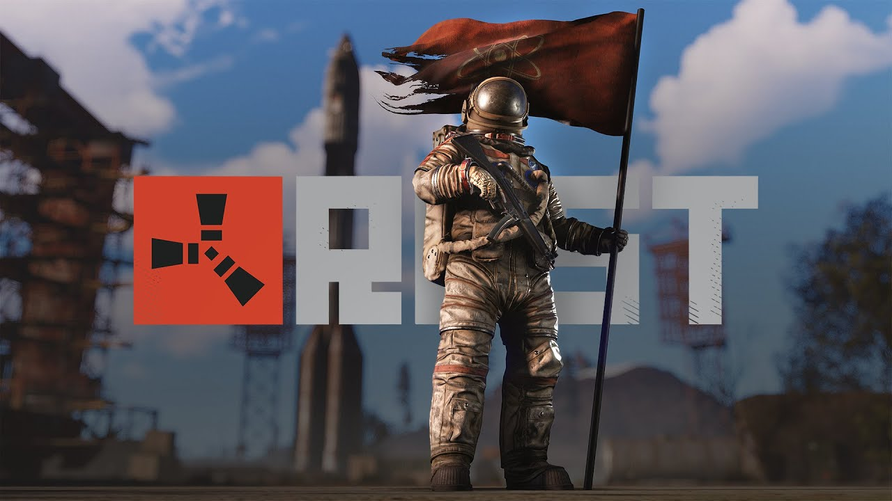

Project Zomboid
Juego de Mundo Abierto, con muchas caracteristicas de los tipos de juego Sandbox, el concepto principal es sobrevivir contra el entorno y te hace una pregunta simple al empezar... Como vas a morir?


Day Z
DayZ es un juego de supervivencia extrema en mundo abierto donde solo existe una regla: sobrevivir a toda costa. Y no es fácil, porque una plétora de amenazas acechan en cada rincón...
Rust
Obviamente como en los demas juegos de survival, la idea principal es sobrevivir, en este juego enfocado en el Multijugador; todo lo que te encuentres va a querer matarte, desde las zonas seguras hasta los otros jugadores.
